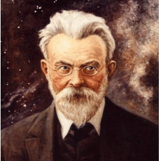
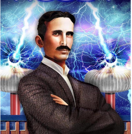
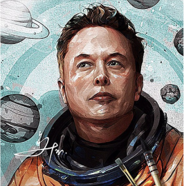

Про
Проект
Проект показує повну картину того, як екологічні проблеми впливають на нас насправді.
Ми можемо
Зберегти
Нашу планету
Онтологія відносин
"людина-природа"
450
Традиційне
суспільство
1820
Індустріальне
суспільство
1980
Традиційне
суспільство

Микола
Вернадський
Вернадський був учнем В. В. Докучаєва, який першим почав комплексно досліджувати взаємозв'язок між рослинністю і ґрунтом, довівши, що останній є продуктом життєдіяльності рослин. Учень пішов ще далі. Саме його праця "Біосфера" , в якій розкрито геологічне значення живої речовини та її вплив на біогеохімічні процеси, перетворення енергії і на еволюцію планети, відобразила глобальні закони екології.

Нікола
Тесла
Нікола Тесла створив генератор змінного струму, опираючись на принципи обертання магнітних полів Землі, і тим самим надав людству можливість широкого використання електрики. ... Його лабораторію часто відвідував Марк Твен. Великий письменник допомагав Ніколі при демонстрації його винаходів.

Ілон
Маск
Ілон Маск став першим, хто зміг домогтися частково повторного використання ракетоносіїв. З їх допомогою доставляють різні вантажі на орбіту. Зазвичай паливні баки і прискорювачі від космічних носіїв або згорають в атмосфері Землі, або просто виявляються на дні океану. Ідея полягала в тому, щоб по-максимуму повторно використовувати ракету, тим самим зменшивши кількість відходів.
Відомі
Люди
Боротьба з екологічними проблемами